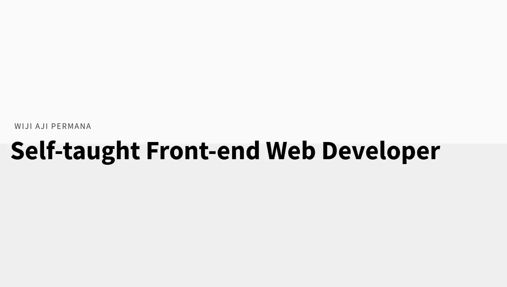
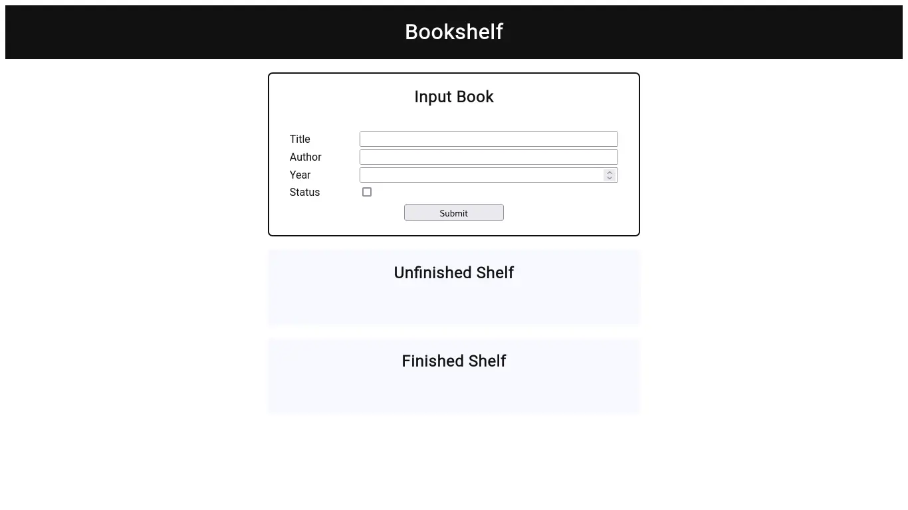
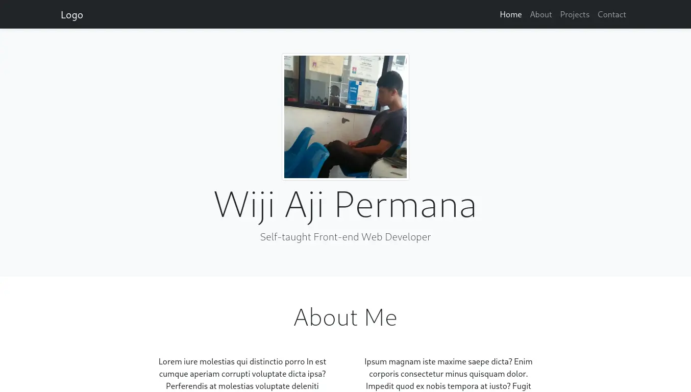

Portfolio
This is my first online web portfolio. Original design by Jemima Abu. I like this design because it has simple colors, simple layout, and simple animations.
WIJI AJI PERMANA
I'm a self-taught front-end web developer. I've been learning about programming since September 2020.
I have a good understanding of HTML, CSS and JavaScript. I am also familiar with Bootstrap.
I am quite familiar with using Figma to create mock up designs.
I have a good understanding of how to work with Git.
I use Vim as my text editor.

This is my first online web portfolio. Original design by Jemima Abu. I like this design because it has simple colors, simple layout, and simple animations.

This is a simple imitation bookshelf. It uses local storage to store book data as JSON. This is one of the Dicoding course exercises. This exercise helped me understand how to use local storage.

This is my mock portfolio which I created using the Bootstrap framework. This design was originally from the WPU Bootstrap exercise. I made it different and simple.